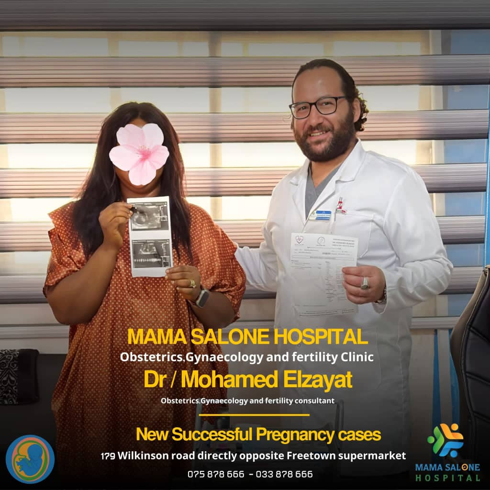

More than a hospital — a neighbour on Wilkinson Road
Mama Salone Hospital began with a small clinical team, a handful of rooms and a conviction that compassionate care should be the standard, not the exception. What started as a modest practice has grown into a full-service hospital with six specialist departments — and it has grown alongside the community it serves.
Today, families from across Freetown — from Wilkinson Road and Murray Town to Aberdeen, Lumley and beyond — walk through our doors knowing they will be listened to. Mothers come for safe deliveries. Parents bring children with fevers at midnight. Grandparents come for blood pressure checks and honest advice.
We are proud to be a place where the receptionist knows your name, where the laboratory returns results the same day, and where the pharmacy next door means you never have to travel across town for medicine.
- Six specialist departments under one roof
- On-site laboratory with fast, same-day results
- Full pharmacy stocked with genuine medicines
- Open seven days a week, with emergency support
 Serving Freetown since day one
Serving Freetown since day one

Medical DirectorDr. Mohamed El Zayat
Obstetrics & Gynaecology · Internal Medicine
Dr. Mohamed El Zayat is the founder and Medical Director of Mama Salone Hospital. He trained in obstetrics and gynaecology and internal medicine, and has spent his career caring for families in Sierra Leone — through safe deliveries, difficult diagnoses and everyday consultations alike.
He is known less for the titles on his wall than for the way he practises: sitting down, listening fully, and explaining what is happening in plain language. Patients often mention that he remembers their history, their family and their fears.
Areas of focus
- Antenatal care, safe delivery and postnatal follow-up
- Women's health, including fibroids, infections and fertility guidance
- Management of malaria, typhoid, diabetes and hypertension
- Paediatric and family consultations across all age groups
A personal message
“I want every mother to feel safe, every child to feel brave, and every family to leave our hospital knowing exactly what happens next. That is the care I would want for my own family — so that is the care we give.”
If you are unsure which department you need, book a general consultation and Dr. El Zayat will guide you personally.
Mission, vision and values
These are not posters on a wall. They are the standards we hold ourselves to every single day, for every single patient.
Our Mission
To provide accessible, affordable and high-quality medical care to the people of Freetown — delivered with dignity, honesty and genuine warmth.
Our Vision
To be the hospital Sierra Leonean families trust first — a place where safe, modern healthcare and human kindness are never separated.
Compassion
We treat people, not conditions. We listen before we prescribe, and we never rush a frightened patient out of the room.
Integrity
Clear pricing, honest diagnoses and no unnecessary treatment. If we cannot help you here, we will tell you exactly where to go.
Trust is earned, one patient at a time
We do not ask families to take our word for it. We ask them to come in, meet the team, and see how they are treated.
-
Experienced clinical leadership Led personally by Dr. Mohamed El Zayat, supported by a trained nursing and laboratory team.
-
Everything in one place Consultation, laboratory testing and pharmacy under a single roof — no running across town.
-
Fast, same-day results Our on-site laboratory means most test results come back the same day, so treatment starts sooner.
-
Transparent and affordable You will know the cost before treatment begins. No hidden charges, no surprises.
-
Truly easy to reach 179 Wilkinson Road, directly opposite Freetown Supermarket — with four phone lines always open.
Come and meet the team looking after your family
179 Wilkinson Road, opposite Freetown Supermarket, Freetown, Sierra Leone